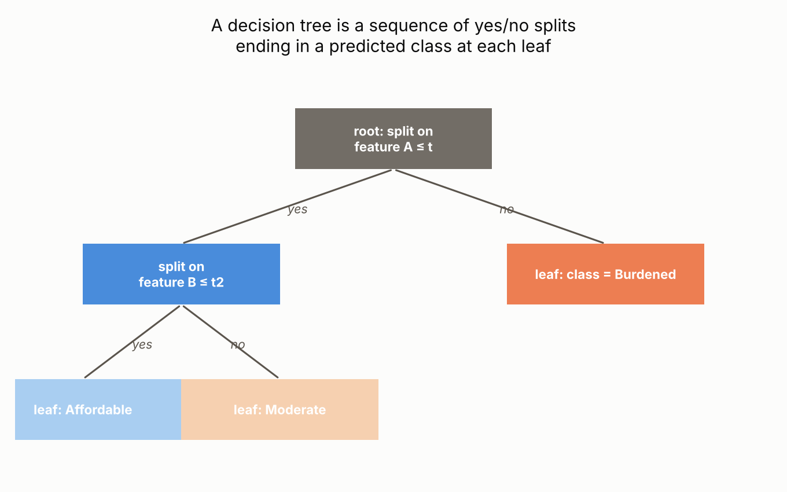
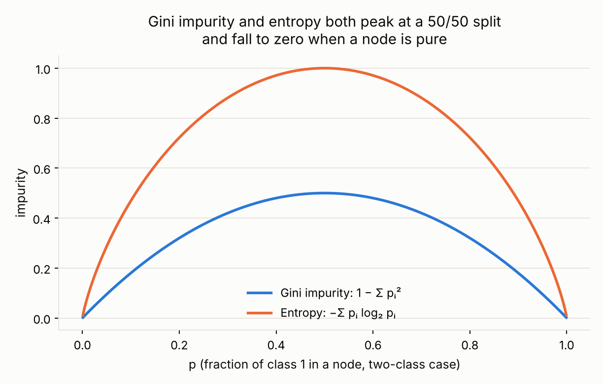
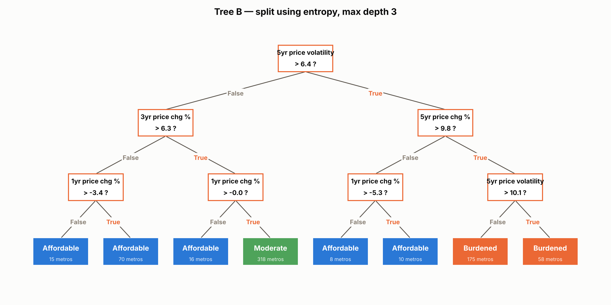
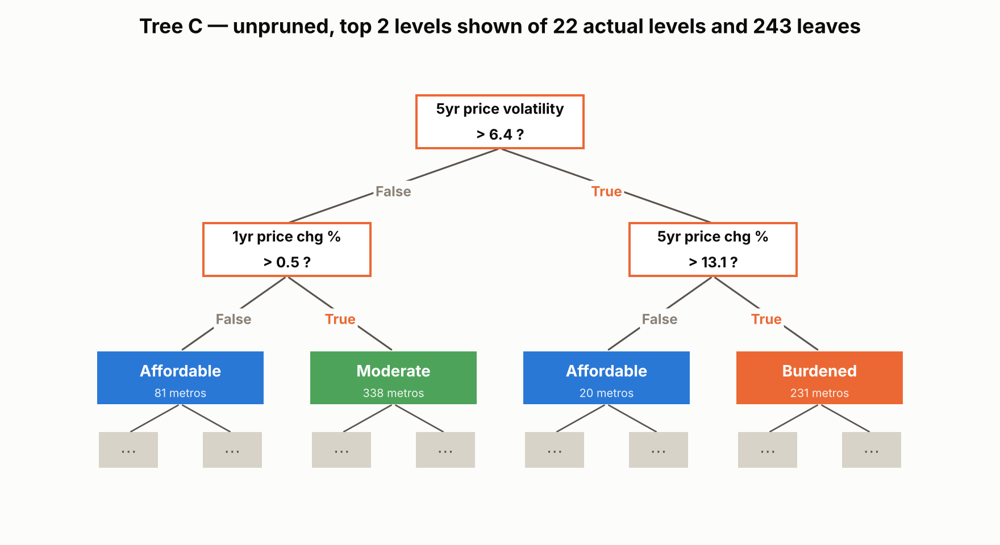
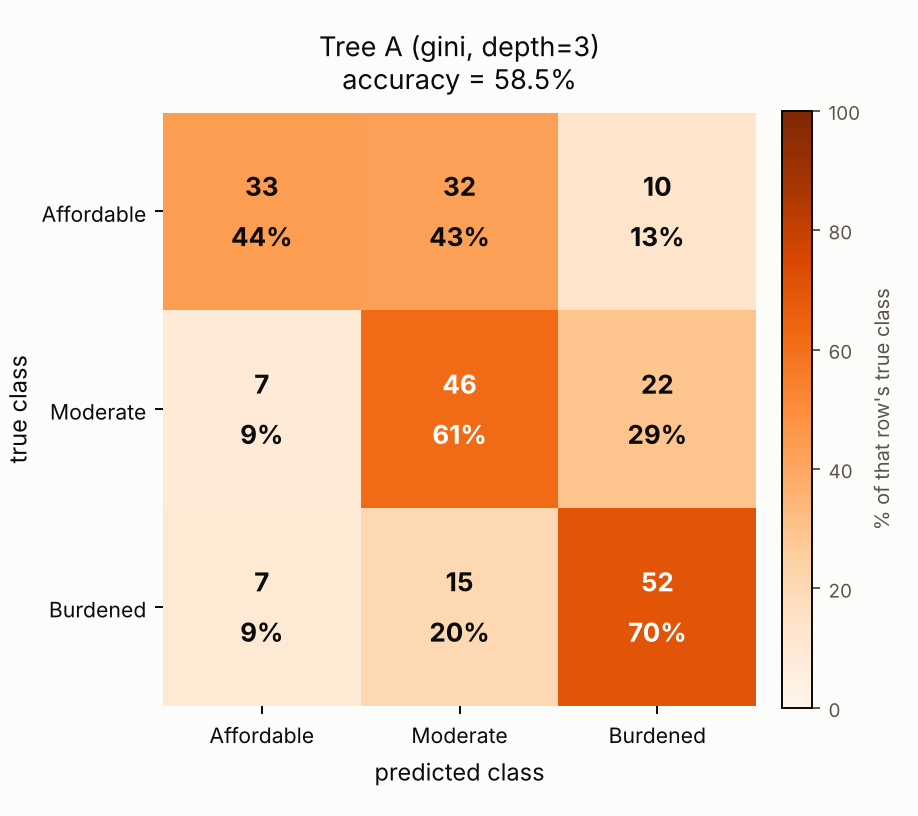
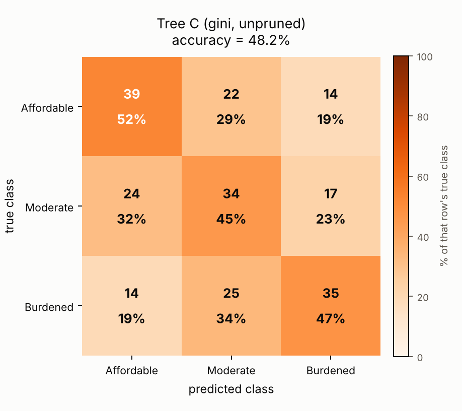
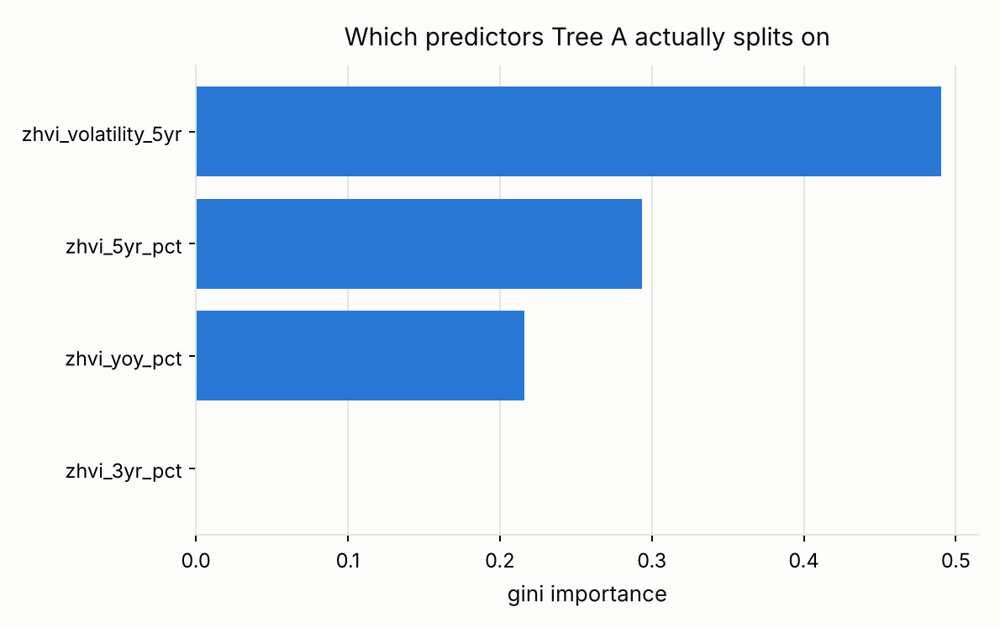

Decision Trees
Gini, entropy, and three trees of varying depth
Objective. Same prediction task as the Naive Bayes tab: classify a metro area into one of three affordability classes, Affordable, Moderate, or Burdened, from its recent price growth and volatility alone. Decision trees are used here specifically because each split can be read off directly, so the trees below show exactly which of the four predictors (and what threshold) is doing the predicting, something Naive Bayes doesn't expose.
Overview
A decision tree is a supervised classification (or regression) method that predicts a class by asking a sequence of yes or no questions about the predictors, each one splitting the data into two smaller, more homogeneous groups, until a stopping point is reached and a class is assigned at each leaf. Decision trees are popular because the resulting tree can be read directly: unlike Naive Bayes, which only produces a probability from an equation, a tree shows exactly which feature and threshold led to each prediction, which makes it easy to explain to someone without a statistics background. The goal of applying decision trees here is the same classification task used for Naive Bayes, predicting a metro's affordability class from its recent price growth and volatility, but with a method that can also show, split by split, which of those four predictors actually drives the prediction and at what threshold.


Each split in a tree is chosen to make the two resulting groups as pure as possible, meaning each group contains mostly one class rather than an even mix. Gini impurity and entropy are the two most common ways to measure how mixed a group is: both equal zero when a node is perfectly pure and both are highest when classes are evenly split. Information gain is the reduction in entropy (or the equivalent reduction in gini, sometimes called the gini gain) achieved by a split, the impurity of the parent node minus the weighted average impurity of its two children. The table below works through the actual root split chosen for Tree A on this project's data, splitting on 5-year price volatility at 6.44: the parent node's gini impurity of 0.667 falls to a weighted average of 0.622 across its two children, a gini gain of 0.044, and the parent's entropy of 1.585 falls to a weighted 1.489, an information gain of 0.096. Because there is no single rule for which feature to split on first when several give a similar improvement, and because a tree can keep splitting until every leaf is pure or runs out of data, an essentially unlimited number of different, equally valid trees can be grown from the same data just by varying the maximum depth, the impurity measure, or how ties between competing splits are broken.
| Node | n | Class counts (Afford. / Mod. / Burd.) | Gini | Entropy |
|---|---|---|---|---|
| Parent (root, before split) | 670 | 223 / 225 / 222 | 0.667 | 1.585 |
| Left child (5yr volatility ≤ 6.44) | 419 | 166 / 170 / 83 | 0.639 | 1.520 |
| Right child (5yr volatility > 6.44) | 251 | 57 / 55 / 139 | 0.594 | 1.438 |
| Weighted average after split | 670 | – | 0.622 | 1.489 |
| Gain from this split | – | – | 0.044 | 0.096 |
Data Prep
Decision trees are also a supervised method and need the same kind of labeled, split data as Naive Bayes: a class to predict for every metro, and a disjoint Training Set and Testing Set so accuracy is measured on metros the tree never saw while growing. The same 894-metro table and the same 75/25 stratified 670/224 split used for Naive Bayes are reused here, so the two methods can be compared fairly on identical data. Unlike Naive Bayes, trees do not need the predictors binned or binarized, since a split just compares one feature to a numeric threshold directly, so the four price-growth and volatility predictors are used here on their original continuous scale.

metro_2025_supervised.csv, the same labeled table used for Naive Bayes.
Full file on GitHub ↗
Code
Python, using scikit-learn's DecisionTreeClassifier directly on the unscaled predictors;
trees compare one feature to a threshold at a time, so standardizing is not required the way it was for
k-means or PCA.
trees = {
"Tree A (gini, depth=3)": DecisionTreeClassifier(criterion="gini", max_depth=3, random_state=42),
"Tree B (entropy, depth=3)": DecisionTreeClassifier(criterion="entropy", max_depth=3, random_state=42),
"Tree C (gini, unpruned)": DecisionTreeClassifier(criterion="gini", max_depth=None, random_state=42),
}
⋮ # fit each on the training set, predict the test set, confusion matrix + accuracy- prep_supervised_data.py : builds the labeled table and the stratified train/test split
- run_decision_trees.py : three trees, confusion matrices, feature importance, the worked split example
Results
The two shallow trees (max depth 3) perform almost identically regardless of which impurity measure built them: Tree A (gini) reaches 58.5 percent test accuracy and Tree B (entropy) reaches 58.0 percent, both well above the 33.3 percent random-guessing baseline and meaningfully better than either Naive Bayes variant. The unpruned Tree C tells a different story: grown with no depth limit, it reaches 22 levels and 243 leaves, perfectly memorizing patterns in the 670 training metros, but its test accuracy actually falls to 48.2 percent, below even the shallow trees. This is a textbook case of overfitting: a tree flexible enough to carve out a leaf for nearly every unusual combination of training rows ends up matching noise in that training data rather than a pattern that generalizes to new metros.
| Tree | Test accuracy | Depth | Leaves |
|---|---|---|---|
| Tree A (gini, max depth 3) | 58.5% | 3 | 8 |
| Tree B (entropy, max depth 3) | 58.0% | 3 | 8 |
| Tree C (gini, unpruned) | 48.2% | 22 | 243 |
| Random guessing (3 balanced classes) | 33.3% | – | – |
A standard scikit-learn tree diagram draws a box for every node with four things in it: the yes/no question, the gini or entropy score of that node, “samples” (how many training rows reached it), and “value” (the exact count of rows belonging to each of the three classes at that node). The majority class is then whichever entry in that value array is largest. The trees below keep the question and the sample count, and replace the three-number value array with a single color and class label, the one the tree would actually predict there, since reading three raw counts out of every box adds little once the worked example above already shows exactly how those counts turn into a gini or entropy score. The calculation behind that worked example, run directly against the training data rather than read off a fitted model attribute, is shown below.
def gini(counts):
p = counts / counts.sum()
return 1 - np.sum(p ** 2)
def entropy(counts):
p = counts[counts > 0] / counts.sum()
return -np.sum(p * np.log2(p))
parent_counts = class_counts(np.ones_like(left_mask, dtype=bool)) # [223, 225, 222]
left_counts = class_counts(left_mask) # volatility <= 6.44
right_counts = class_counts(right_mask) # volatility > 6.44
weighted_gini_after = (n_left / n_total) * gini(left_counts) + (n_right / n_total) * gini(right_counts)
gini_gain = gini(parent_counts) - weighted_gini_after # matches the table aboveReading the trees below: each white box is a yes/no question about one predictor. Following the orange True or grey False label down from a question box leads to the next question, or to a colored leaf box, which shows the predicted class and how many training metros reached it.





Conclusions
Letting a model ask a sequence of questions about recent price growth and volatility predicts a metro's current affordability class meaningfully better than chance, and better than either Naive Bayes variant managed with the same four predictors, but a shallow, limited tree generalizes better than one left free to grow as deep as it wants. For this project's underlying question, that argues for favoring simpler, more constrained models of housing affordability over more complex ones chasing marginal gains on the training data, especially given how few predictors (only four) were available to the model and how much of affordability's story, shown already in Module 2, is really about price level rather than price movement.